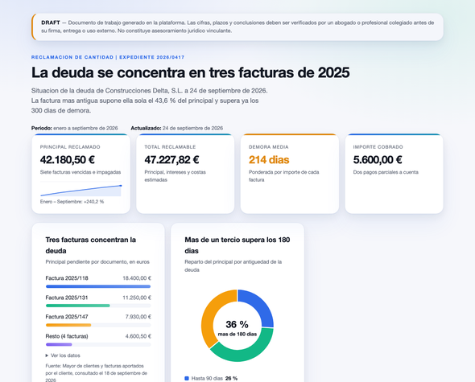
Panel de datos
Indicadores y gráficos de un periodo o una cartera; seguimiento de facturación o deuda
DRAFT — Documento de trabajo generado en la plataforma. Las cifras, plazos y conclusiones deben ser verificados por un abogado o profesional colegiado antes de su firma, entrega o uso externo. No constituye asesoramiento juridico vinculante.
Skill Reportes | Qué puede elegir
Elija un estilo para el aspecto del documento y los gráficos que respondan a sus preguntas. Puede pedirlos por su nombre en el chat.
Cada gráfico con su aspecto real, su nombre y para qué sirve. Las miniaturas las dibuja el motor de la skill con datos de ejemplo; en el informe salen a tamaño completo, con su tabla de datos y su fuente.
Formatos · 18

Indicadores y gráficos de un periodo o una cartera; seguimiento de facturación o deuda
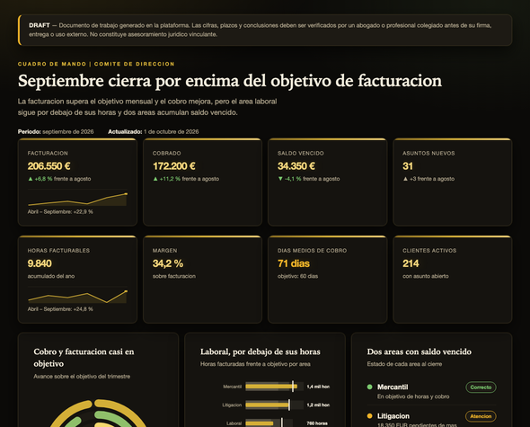
Ocho KPIs con su variación, objetivos y estado por área; para el comité de dirección
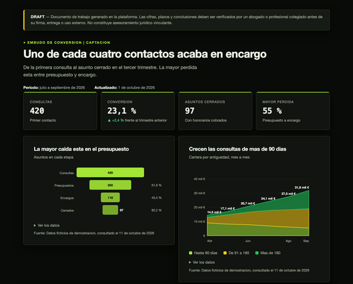
Un proceso por etapas y dónde se pierde; captación, recobro o tramitación
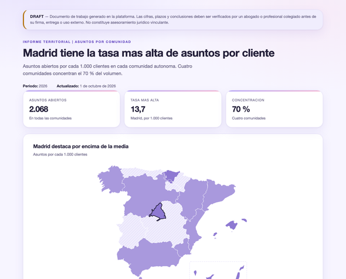
Datos por comunidad autónoma o provincia en un mapa, con ranking y concentración
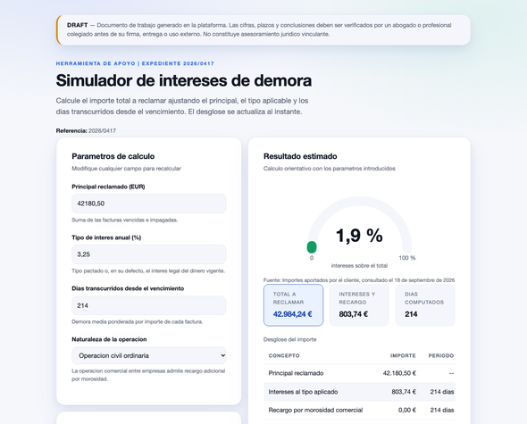
Calculadora o simulador que recalcula al cambiar los datos
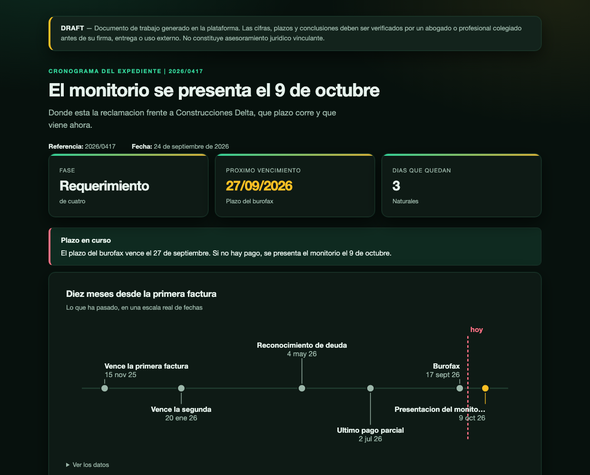
Qué ha pasado, qué plazo corre y qué viene; para el cliente que pregunta cómo va lo suyo
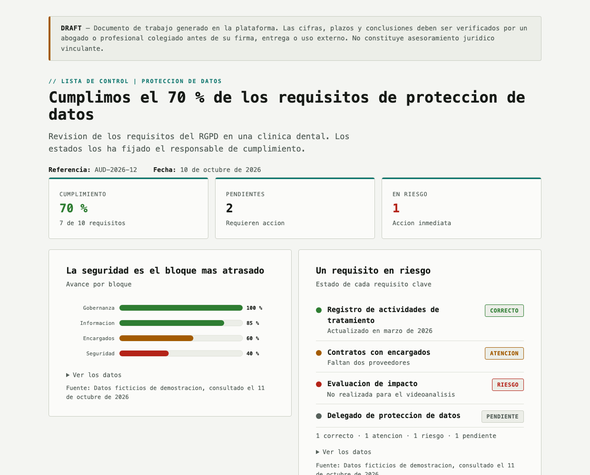
Cumplimiento por bloque y por requisito, con sus evidencias; auditorías y compliance
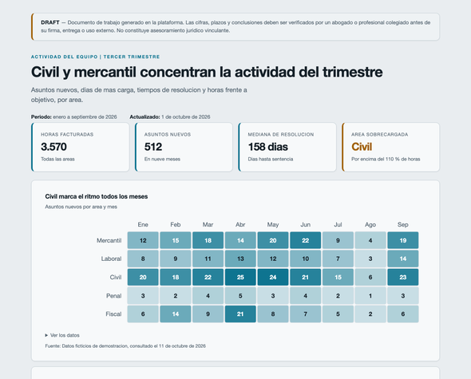
Horas, asuntos y carga por área y por mes
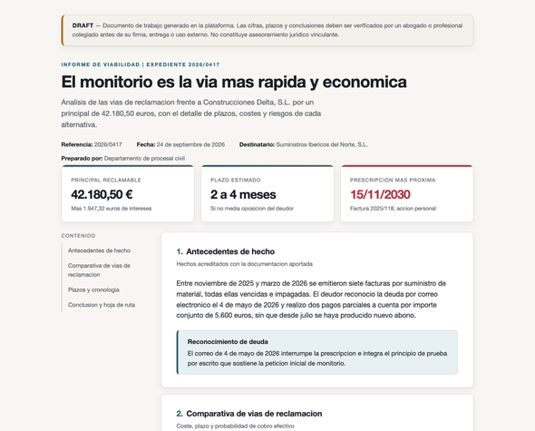
Un caso explicado con secciones, indicadores, plazos y cronología
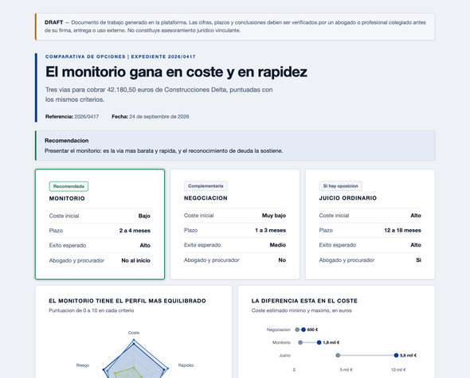
Dos a cuatro opciones frente a frente con los mismos criterios y la recomendada destacada
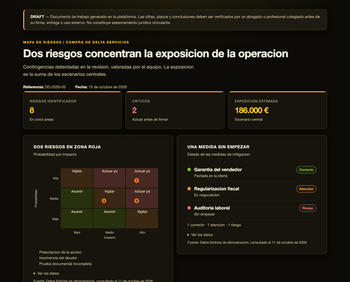
Matriz de probabilidad e impacto, impacto económico y exposición
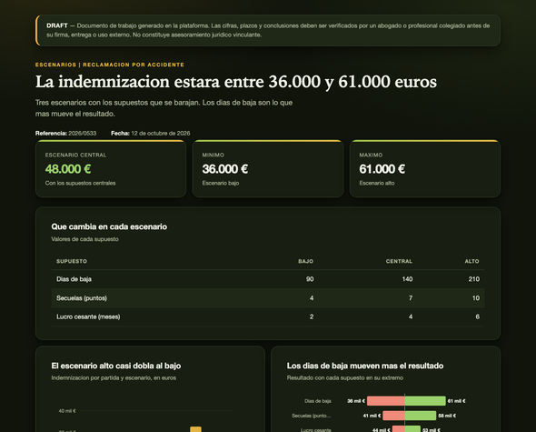
Qué pasa si cambian los supuestos: horquilla del resultado y qué lo mueve más
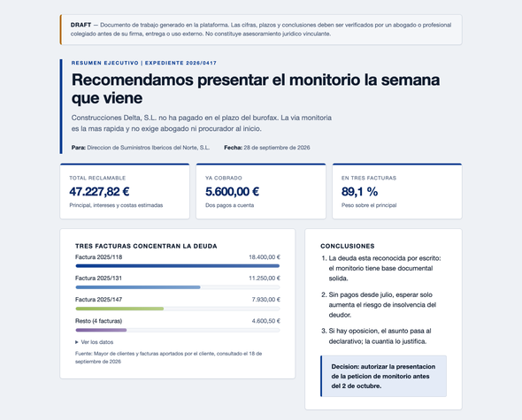
Una página A4 con la conclusión, tres cifras y la decisión que se pide
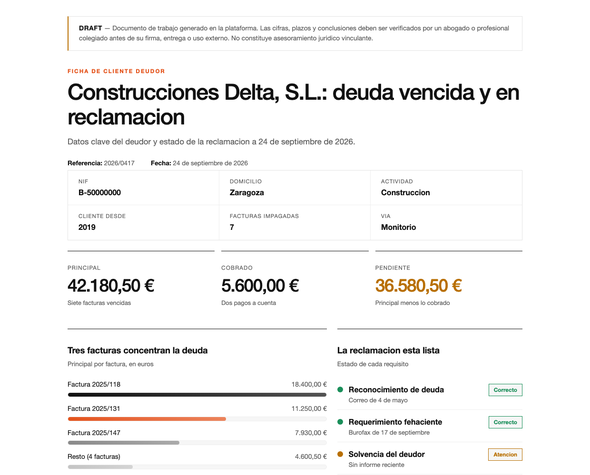
Datos clave de un asunto, un cliente o una sociedad en una página A4
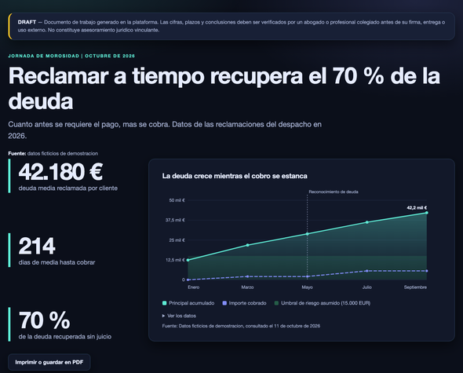
Una hoja A3 apaisada con tres cifras y un gráfico grande, para colgar
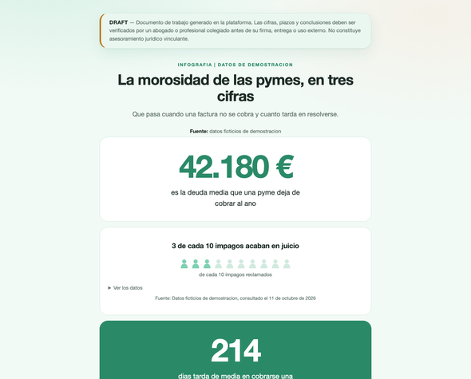
Tres cifras enormes y gráficos sencillos en vertical, para divulgar
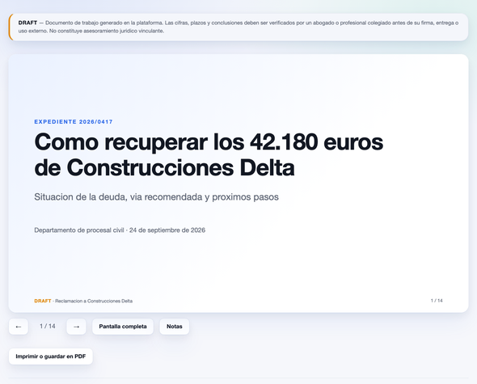
Diapositivas 16:9 con notas del orador para una reunión
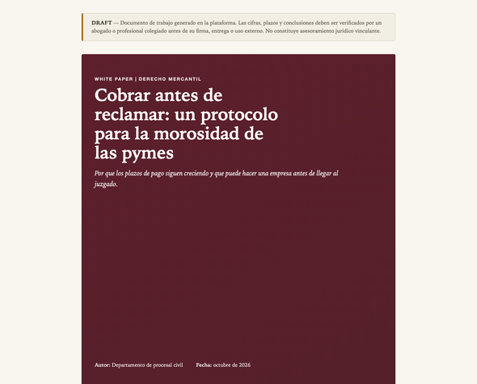
White paper o memoria con portada, índice y muchos gráficos
Estilos · 21
Paneles y presentaciones
Juzgado y cliente institucional
Documentos para imprimir
Memorias y comités
Resúmenes de una página
Proyectar en pantalla
Auditorías y cumplimiento
Particulares y familia
Administración y organismos
Paneles densos
Boletines y comunicación
Novedades normativas
Accesibilidad
Prestigio y dirección
Paneles en pantalla
Paneles operativos
Rural y patrimonio
Tecnología y datos
Salud y particulares
Familia y eventos
Comunicación interna
Gráficos · 44, según la pregunta que responden
Comparar partidas ordenadas de mayor a menor: facturas, deudores, áreas.
Comparar pocos periodos o grupos, con una o varias series.
Ver qué pocos deudores o causas concentran casi todo.
Lo real frente al objetivo, con tramos de valoración.
Lo pedido frente a lo concedido en cada partida.
Cómo cambia cada partida entre dos momentos.
Saldos a favor y en contra alrededor de cero.
Evolución en el tiempo, con umbral legal y anotaciones.
Cómo se compone el total mes a mes.
Valores que rigen a tramos, como el interés legal.
La tendencia dentro de una cifra, sin ocupar sitio.
Tres o cuatro partes de un total, con la cifra en el centro.
Reparto en hasta seis porciones.
Composición de cada periodo, con el total encima.
Proporción por periodo, cuando no importa el volumen.
El peso de muchas partidas a la vez.
Una proporción contada en figuras: «3 de cada 10».
Varios plazos en un mismo calendario, con la marca de hoy.
Hitos del expediente sobre una escala real de fechas.
Qué días concentran vencimientos o actividad.
Porcentaje consumido de un plazo o alcanzado de un objetivo.
Avance por fase, con marca de objetivo.
Avance de hasta cuatro objetivos a la vez.
Estado de cada punto de control o requisito.
Nota de cada criterio en una escala corta.
Probabilidad por impacto, con lo que hay que hacer.
Qué parámetro mueve más el resultado de una simulación.
Dónde cae una cifra dentro de la horquilla legal.
El perfil de cada opción en varios criterios.
Cómo se reparten muchos valores sueltos, como días de demora.
Mediana y dispersión por grupo, como días por juzgado.
Relación entre dos magnitudes; las burbujas añaden una tercera.
Dónde se concentra algo en dos dimensiones.
Dos grupos enfrentados por tramos.
Cómo se llega del principal al total, paso a paso.
Cuántos llegan a cada etapa y cuántos se pierden.
De dónde a dónde fluye un importe o un volumen.
Pasos de un procedimiento y dónde se decide.
Estructura societaria o quién depende de quién.
Qué relación tiene cada parte con el caso.
Quién hace qué en cada momento.
Concentración por comunidad autónoma, con tasas.
Detalle provincial; sin dato, rayado.
Lleva al lector en papel a la fuente original.